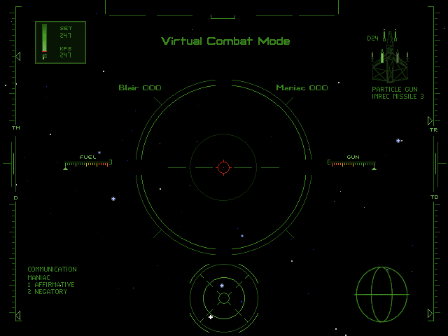

名稱：銀河飛將4：自由的代價 (Wing Commander 4: The Price of Freedom，英文版) 簡介：Origin 1996年出品的太空飛行戰鬥模擬遊戲，1997年移植至Windows，推出DVD版 [待補]。
備註：本版為1.04F CD版 保護：光碟 備註：CD版程式本身內容為DOS版，雖可在Windows上安裝，但仍建議使用DosBox安裝執行。 備註：DVD版在XP以上系統執行時，需將wc4dvd.exe設成Win9x相容。 備註：DVD版由於影片格式與MCI的相容性問題，執行時會出現Missing movie錯誤而無法播放 影片，目前仍未找到解決方法（包括使用Dxmci）。